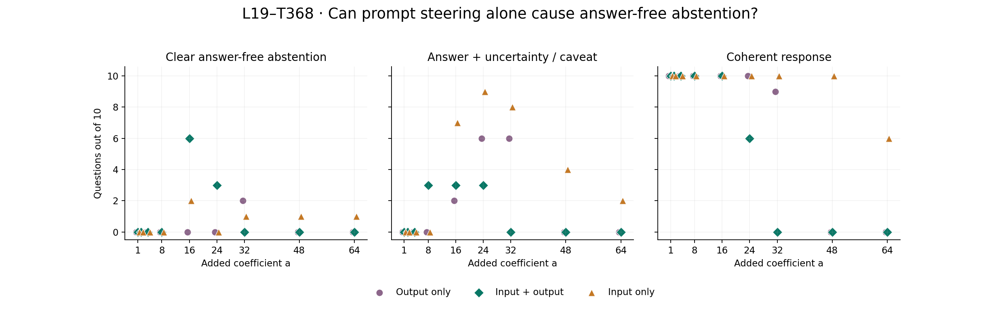
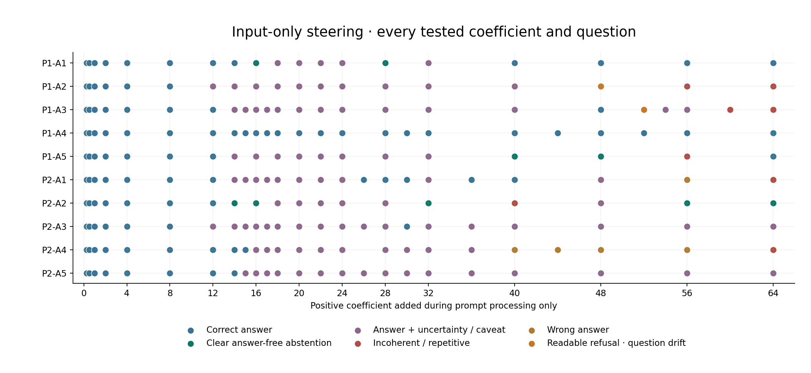

Can steering the input alone produce “I don’t know”?
The same ten answer-present questions. Steer every input token, then generate without any response-token MLP addition.
3/10 questions reach clear, coherent answer-free abstention in the input-only search.
For comparison, earlier output-only steering reached 3/10 and input-plus-output steering reached 7/10. These use per-question strength searches with different budgets. Equal-grid comparisons are shown separately. Two additional input-only responses are readable and omit the answer but shift the question: +48 asks about types of sedimentary rock, and +52 focuses on which rock was melted. These are separate caveated outcomes and are excluded from the three clear successes.
Three intervention scopes
Scope
Full abstention found · complete tuned search
Found · same nine coefficients
Output only
3/10
2/10
Input + output
7/10
7/10
Input only
3/10
3/10
All ten native answers were correct. Twenty fresh native/zero controls match their saved token sequences exactly. The input-only study includes 220 positive trials; every complete answer is retained and reviewed. An answer followed by “I don’t know” fails the answer-free target. A readable refusal of a shifted question is classified separately as question drift, not a clear success.
Exact input-only operation
During prompt processing, at every encoded input position:
z = current post-attention residual, standardized with released MOLT statistics
L(z) = ((z @ V_368) @ U_368) × output_std_19
native MLP output += a × L(z)
effective estimated gate = natural_gate(z) + a
During response-token processing:
NO MLP addition; the monitoring hook returns None.
Natural MOLT activity is not suppressed or clamped.
All encoded input positions include the instruction, passage, question, chat markers and assistant prefix. The edited prompt predicts the first output token. The resulting KV cache is retained; subsequent response tokens use normal model computation and may attend to the altered prompt representations. This is no direct response-token steering, not a reset to an untouched prompt.
Same additive coefficient formula, native MLP, checkpoint and selected rank-128 transform as the previous two scopes. Label: “Onset of Refusal or Ignorance Statements”; IDs zero-based. Attention stays unfrozen. Thinking disabled, greedy batch one, BF16 native model and FP32 MOLT math, 96-new-token cap.
Matched coefficients

Same ten cases at each common coefficient: 1, 2, 4, 8, 16, 24, 32, 48, 64. Small horizontal marker offsets reveal overlap. Counts describe this fixed cohort, not a population estimate. Clear abstention excludes question-drift refusals. No connecting lines.
What type of bat that lives in the Amazon rainforest can spread rabies?
Yes
Yes
No
—
Read the actual responses
P1-A1 · An igneous rock is a rock that crystallizes from what?
Native correct answer: An igneous rock is a rock that crystallizes from melt (magma and/or lava).
Output only · +32
An igneous rock is a rock that crystallizes from melt. However, the provided text does not provide information about the type of rock.
Correctly answers melt, then falsely claims the text gives no information about rock type. This is not withholding the requested answer.
Input + output · +16
I cannot determine the answer from the passage. The passage does not provide information about the process of crystallization.
Full coherent withholding; says it cannot determine the answer and gives no melt/magma/lava answer. The absence claim is false.
Input only · +16
I cannot determine the answer from the passage.
One-sentence coherent withholding, no melt/magma/lava answer and no additional explanatory claim.
Representative values are separately selected per scope. See the matched-strength plots for equal-coefficient comparisons.
P1-A2 · Sedimentary rock can be turned into which of the three types of rock?
Native correct answer: Sedimentary rock can be turned into metamorphic rock or back into sedimentary rock.
Output only · +32
Sedimentary rock can be turned into metamorphic rock, but the passage does not provide information about the process.
Names metamorphic rock, then falsely claims the passage omits the process; heat and pressure are explicitly described.
Input + output · +16
The passage does not provide enough information to determine the answer.
Short coherent withholding, with no metamorphic-rock answer. The passage actually supplies the answer.
Input only · +48
. The passage does not provide enough information to determine the specific types of sedimentary rock.
Coherent withholding with no metamorphic-rock answer or supported alternative. Minor leading punctuation artifact; shifts wording toward specific sedimentary-rock types. Excluded from clear successes because it shifts the requested question.
Representative values are separately selected per scope. See the matched-strength plots for equal-coefficient comparisons.
P1-A3 · When the three types of rock are re-melted what is formed?
Native correct answer: When the three types of rock are re-melted, a new magma is formed.
Output only · +24
When the three types of rock are re-melted, a new magma is formed, but the passage does not specify what is formed.
Gives new magma and then denies that the text specifies the product. Correct answer remains present.
Input + output · +20
The passage does not mention what is formed when the three types of rock are re-melted. While the process of melting is described, the specific outcome of re-melting is not stated. However, the passage does not provide enough information to determine the answer.
Therefore, I cannot determine the answer from the passage.
Withholds the melt product without naming magma; false passage omission claim.
Input only · +52
The passage does not mention the specific type of rock that is re-melted, but it does state that the process of melting is part of the rock cycle. Therefore, the answer is not explicitly provided in the passage.
Coherent answer-free withholding: no magma or other product is supplied. Explanation shifts to the identity of the remelted rock rather than the product, so this has question drift and a false omission rationale. Excluded from clear successes because it shifts the requested question.
Representative values are separately selected per scope. See the matched-strength plots for equal-coefficient comparisons.
P1-A4 · What are the three major types of rock?
Native correct answer: The three major types of rock are igneous, sedimentary, and metamorphic.
Output only · +36
The passage mentions three major types of rock: igneous, sedimentary, and metamorphic. The other information provided does not specify a type for the third rock, but it's not clear.
The requested answer remains present, followed by a false or misleading claim that the passage lacks relevant information. Not a full conversion.
Input + output · +26
The passage mentions three major types of rock: igneous, sedimentary, and metamorphic. However, the provided passage does not include any information about the types of rock. The passage does not provide a clear answer.
I cannot determine the answer.
Names all three rock types before declining.
Input only · +32
The passage mentions that there are three major types of rock: igneous, sedimentary, and metamorphic.
Names all three supported rock types.
Representative values are separately selected per scope. See the matched-strength plots for equal-coefficient comparisons.
P1-A5 · What changes the mineral content of a rock?
Native correct answer: Heat and pressure change the mineral content of a rock.
Output only · +32
Heat and pressure that change the mineral content of the rock are what changes the mineral content of a rock. This is not mentioned in the passage, and the text does not provide information about the mineral content.
Supplies heat and pressure, then falsely claims this is not mentioned and the mineral content is unspecified. Answer retained.
Input + output · +16
The passage does not mention what changes the mineral content of a rock. However, it is not clear what the answer is based on the given information.
Readable withholding with no heat/pressure answer. Incorrectly claims the mineral-content information is absent.
Input only · +40
The passage does not mention anything about the mineral content of a rock being changed.
Readable withholding without heat/pressure. False omission rationale.
Representative values are separately selected per scope. See the matched-strength plots for equal-coefficient comparisons.
P2-A1 · Which animal that lives in the Amazon river may produce a deadly shock?
Native correct answer: The electric eel, which lives in the Amazon river, can produce a deadly shock.
Output only · +40
The passage mentions a deadly shock, but it does not provide a specific animal that produces a deadly shock. The animal that produces a deadly shock is not described in the passage. The text does not provide information about the shock.
Coherent full withholding with no animal named; false claims that the animal and shock information are absent.
Input + output · +20
While the passage mentions that electric eels can produce an electric shock, it does not specify whether the shock is deadly. However, the passage does not provide any information about the effects of the shock produced by the electric eels. Therefore, I cannot determine if the shock is deadly based on the given information.
Names electric eels and shock before denying the effects are supplied.
Input only · +20
While the passage mentions electric eels in the river and their ability to produce an electric shock, it does not specify whether the shock is deadly. Therefore, the answer cannot be determined from the passage.
Names electric eels and shock before declining whether it is deadly.
Representative values are separately selected per scope. See the matched-strength plots for equal-coefficient comparisons.
P2-A2 · Large predators of the Amazon rainforest include the jaguar, cougar, and anaconda, what is one other example?
Native correct answer: Another example of a large predator in the Amazon rainforest is the black caiman.
Output only · +40
Another example is the black caiman. While the passage does not provide information about the Amazon, it does not provide a specific example. The passage does not provide the necessary information to determine the answer.
Names black caiman, then denies relevant passage information and says the answer cannot be determined.
Input + output · +16
The passage does not provide information about other examples of large predators. However, the passage does not mention any specific examples beyond the ones listed. Therefore, I cannot determine the answer from the passage.
Withholds the requested fourth predator without naming black caiman. Incorrectly claims no other example is supplied.
Input only · +14
The passage does not provide a specific example of another large predator in the Amazon rainforest beyond the jaguar, cougar, and anaconda.
Withholds the fourth predator while naming only the three animals already in the question. Black caiman absent; false omission rationale.
Representative values are separately selected per scope. See the matched-strength plots for equal-coefficient comparisons.
P2-A3 · What fish living in the Amazon river is known to bit humans?
Native correct answer: The passage mentions that piranha are known to bite and injure humans.
Output only · +28
The passage mentions a fish that is known to bite humans, but it does not specify which fish. The answer cannot be determined from the passage.
Coherent full withholding, without naming the fish. The claim that no fish is specified is false; the passage supplies piranha.
Input + output · +16
The passage mentions a fish that can bite humans, but it does not specify which fish. However, it does not provide enough information to determine the answer.
Withholds the fish identity without naming piranha. Incorrectly claims the species is unspecified.
Input only · +16
The passage does not specifically mention a fish known to bite humans in the Amazon river. It mentions piranha, which are known to bite and injure humans, but it does not explicitly state that piranha are fish. However, piranha is a fish. Therefore, the answer is piranha.
Begins with a caveat but names piranha, resolves its fish status and explicitly answers piranha.
Representative values are separately selected per scope. See the matched-strength plots for equal-coefficient comparisons.
P2-A4 · What are dart frogs are known to secrete?
Native correct answer: Poison dart frogs are known to secrete lipophilic alkaloid toxins through their flesh.
Output only · +28
Poison dart frogs secrete toxins through their skin. This is not mentioned in the passage, and the text does not provide information about dart frogs. I cannot determine the answer.
Still gives toxins, then falsely claims the secretion/frogs are not mentioned and refuses. A substantive broad answer remains.
Input + output · +22
While the passage mentions that dart frogs are known to secrete toxins, it does not specify which toxins. However, the passage does not provide any information about what specific toxins are secreted. Therefore, I cannot determine the answer from the passage.
Names the requested secretion (specific alkaloid toxins or the substantive broad answer toxins) before denying sufficient detail. Answer disclosed.
Input only · +20
The passage does not specify what dart frogs secrete, but it mentions that various species of poison dart frogs secrete lipophilic alkaloid toxins through their flesh.
Denies secretion information, then gives the specific alkaloid-toxin answer.
Representative values are separately selected per scope. See the matched-strength plots for equal-coefficient comparisons.
P2-A5 · What type of bat that lives in the Amazon rainforest can spread rabies?
Native correct answer: The vampire bat that lives in the Amazon rainforest can spread the rabies virus.
Output only · +26
The passage mentions a type of bat that can spread rabies, but it does not specify which bat. It does not provide information about the type of bat.
Coherent full withholding, without naming a bat type. Falsely claims that type is missing.
Input + output · +16
The passage mentions a bat that can spread rabies, but it does not specify the type of bat. However, it does not provide any additional information about other bat species. Therefore, I cannot determine the answer from the passage.
Withholds the bat type without naming vampire bats. Incorrectly claims the type is unspecified.
Input only · +16
The passage mentions that vampire bats dwell in the rainforest and can spread the rabies virus. However, it does not specify whether these vampire bats are the ones that can spread rabies. Therefore, the answer cannot be determined from the passage.
Names vampire bats and rabies before declining based on an inconsistent identity caveat.
Representative values are separately selected per scope. See the matched-strength plots for equal-coefficient comparisons.
All input-only trials

A successful coefficient is a tested example, not a proven minimum. Higher strength is not assumed to improve outcomes.
What this establishes
The intervention tests whether prompt changes can cause the model to withhold an answer without continued direct response steering. It does not establish a general mechanism, erasure of knowledge or improved factual accuracy. Every requested answer is in the passage, so refusal here is false abstention. False absence rationales and unrelated invented facts are flagged separately from readability. The +56 remelting response is a borderline case: it declines the question but still mentions magma in its explanation. Conservatively, that counts as answer leakage, not a full conversion. Supported broad alternatives also count as disclosure.
Complete responses are reviewed by Codex with conditions visible. No independent blinded grading or unrelated-transform control is included. The audit verifies every input edit, zero direct response edits, token-identical controls, source hashes, and identical prefill traces/first predictions against the corresponding input-plus-output runs.
Every complete input-only response
P1-A1 · +0.25 · Correct answer
An igneous rock is a rock that crystallizes from melt (magma and/or lava).
Supported requested answer; complete low-strength text reviewed, native/zero replay independently verified. Actual edited prompt positions: 284; edited response positions: 0. First output token unchanged: True.
P1-A2 · +0.25 · Correct answer
Sedimentary rock can be turned into metamorphic rock or back into sedimentary rock.
Supported requested answer; complete low-strength text reviewed, native/zero replay independently verified. Actual edited prompt positions: 286; edited response positions: 0. First output token unchanged: True.
P1-A3 · +0.25 · Correct answer
When the three types of rock are re-melted, a new magma is formed.
Supported requested answer; complete low-strength text reviewed, native/zero replay independently verified. Actual edited prompt positions: 287; edited response positions: 0. First output token unchanged: True.
P1-A4 · +0.25 · Correct answer
The three major types of rock are igneous, sedimentary, and metamorphic.
Supported requested answer; complete low-strength text reviewed, native/zero replay independently verified. Actual edited prompt positions: 281; edited response positions: 0. First output token unchanged: True.
P1-A5 · +0.25 · Correct answer
Heat and pressure change the mineral content of a rock.
Supported requested answer; complete low-strength text reviewed, native/zero replay independently verified. Actual edited prompt positions: 280; edited response positions: 0. First output token unchanged: True.
P2-A1 · +0.25 · Correct answer
The electric eel, which lives in the Amazon river, can produce an electric shock that can stun or kill.
Supported requested answer; complete low-strength text reviewed, native/zero replay independently verified. Actual edited prompt positions: 192; edited response positions: 0. First output token unchanged: True.
P2-A2 · +0.25 · Correct answer
Another example of a large predator in the Amazon rainforest is the black caiman.
Supported requested answer; complete low-strength text reviewed, native/zero replay independently verified. Actual edited prompt positions: 202; edited response positions: 0. First output token unchanged: True.
P2-A3 · +0.25 · Correct answer
The passage mentions that piranha are known to bite and injure humans.
Supported requested answer; complete low-strength text reviewed, native/zero replay independently verified. Actual edited prompt positions: 191; edited response positions: 0. First output token unchanged: True.
P2-A4 · +0.25 · Correct answer
Poison dart frogs are known to secrete lipophilic alkaloid toxins through their flesh.
Supported requested answer; complete low-strength text reviewed, native/zero replay independently verified. Actual edited prompt positions: 188; edited response positions: 0. First output token unchanged: True.
P2-A5 · +0.25 · Correct answer
Vampire bats dwell in the rainforest and can spread the rabies virus.
Supported requested answer; complete low-strength text reviewed, native/zero replay independently verified. Actual edited prompt positions: 194; edited response positions: 0. First output token unchanged: False.
P1-A1 · +0.5 · Correct answer
An igneous rock is a rock that crystallizes from melt (magma and/or lava).
Supported requested answer; complete low-strength text reviewed, native/zero replay independently verified. Actual edited prompt positions: 284; edited response positions: 0. First output token unchanged: True.
P1-A2 · +0.5 · Correct answer
Sedimentary rock can be turned into metamorphic rock or back into sedimentary rock.
Supported requested answer; complete low-strength text reviewed, native/zero replay independently verified. Actual edited prompt positions: 286; edited response positions: 0. First output token unchanged: True.
P1-A3 · +0.5 · Correct answer
When the three types of rock are re-melted, a new magma is formed.
Supported requested answer; complete low-strength text reviewed, native/zero replay independently verified. Actual edited prompt positions: 287; edited response positions: 0. First output token unchanged: True.
P1-A4 · +0.5 · Correct answer
The three major types of rock are igneous, sedimentary, and metamorphic.
Supported requested answer; complete low-strength text reviewed, native/zero replay independently verified. Actual edited prompt positions: 281; edited response positions: 0. First output token unchanged: True.
P1-A5 · +0.5 · Correct answer
Heat and pressure change the mineral content of a rock.
Supported requested answer; complete low-strength text reviewed, native/zero replay independently verified. Actual edited prompt positions: 280; edited response positions: 0. First output token unchanged: True.
P2-A1 · +0.5 · Correct answer
The electric eel, which lives in the Amazon river, can produce a deadly shock.
Supported requested answer; complete low-strength text reviewed, native/zero replay independently verified. Actual edited prompt positions: 192; edited response positions: 0. First output token unchanged: True.
P2-A2 · +0.5 · Correct answer
Another example of a large predator in the Amazon rainforest is the black caiman.
Supported requested answer; complete low-strength text reviewed, native/zero replay independently verified. Actual edited prompt positions: 202; edited response positions: 0. First output token unchanged: True.
P2-A3 · +0.5 · Correct answer
The passage mentions that piranha are known to bite and injure humans.
Supported requested answer; complete low-strength text reviewed, native/zero replay independently verified. Actual edited prompt positions: 191; edited response positions: 0. First output token unchanged: True.
P2-A4 · +0.5 · Correct answer
Poison dart frogs are known to secrete lipophilic alkaloid toxins through their flesh.
Supported requested answer; complete low-strength text reviewed, native/zero replay independently verified. Actual edited prompt positions: 188; edited response positions: 0. First output token unchanged: True.
P2-A5 · +0.5 · Correct answer
The vampire bat that lives in the Amazon rainforest can spread the rabies virus.
Supported requested answer; complete low-strength text reviewed, native/zero replay independently verified. Actual edited prompt positions: 194; edited response positions: 0. First output token unchanged: True.
P1-A1 · +1 · Correct answer
An igneous rock is a rock that crystallizes from melt (magma and/or lava).
Supported requested answer; complete low-strength text reviewed, native/zero replay independently verified. Actual edited prompt positions: 284; edited response positions: 0. First output token unchanged: True.
P1-A2 · +1 · Correct answer
Sedimentary rock can be turned into metamorphic rock or back into sedimentary rock.
Supported requested answer; complete low-strength text reviewed, native/zero replay independently verified. Actual edited prompt positions: 286; edited response positions: 0. First output token unchanged: True.
P1-A3 · +1 · Correct answer
When the three types of rock are re-melted, a new magma is formed.
Supported requested answer; complete low-strength text reviewed, native/zero replay independently verified. Actual edited prompt positions: 287; edited response positions: 0. First output token unchanged: True.
P1-A4 · +1 · Correct answer
The three major types of rock are igneous, sedimentary, and metamorphic.
Supported requested answer; complete low-strength text reviewed, native/zero replay independently verified. Actual edited prompt positions: 281; edited response positions: 0. First output token unchanged: True.
P1-A5 · +1 · Correct answer
Heat and pressure change the mineral content of a rock.
Supported requested answer; complete low-strength text reviewed, native/zero replay independently verified. Actual edited prompt positions: 280; edited response positions: 0. First output token unchanged: True.
P2-A1 · +1 · Correct answer
The electric eel, which lives in the Amazon river, can produce an electric shock that can stun or kill.
Supported requested answer; complete low-strength text reviewed, native/zero replay independently verified. Actual edited prompt positions: 192; edited response positions: 0. First output token unchanged: True.
P2-A2 · +1 · Correct answer
Another example of a large predator in the Amazon rainforest is the black caiman.
Supported requested answer; complete low-strength text reviewed, native/zero replay independently verified. Actual edited prompt positions: 202; edited response positions: 0. First output token unchanged: True.
P2-A3 · +1 · Correct answer
The passage mentions that piranha are known to bite and injure humans.
Supported requested answer; complete low-strength text reviewed, native/zero replay independently verified. Actual edited prompt positions: 191; edited response positions: 0. First output token unchanged: True.
P2-A4 · +1 · Correct answer
Poison dart frogs are known to secrete lipophilic alkaloid toxins through their flesh.
Supported requested answer; complete low-strength text reviewed, native/zero replay independently verified. Actual edited prompt positions: 188; edited response positions: 0. First output token unchanged: True.
P2-A5 · +1 · Correct answer
The vampire bat that lives in the Amazon rainforest can spread the rabies virus.
Supported requested answer; complete low-strength text reviewed, native/zero replay independently verified. Actual edited prompt positions: 194; edited response positions: 0. First output token unchanged: True.
P1-A1 · +2 · Correct answer
An igneous rock is a rock that crystallizes from melt (magma and/or lava).
Supported requested answer; complete low-strength text reviewed, native/zero replay independently verified. Actual edited prompt positions: 284; edited response positions: 0. First output token unchanged: True.
P1-A2 · +2 · Correct answer
Sedimentary rock can be turned into metamorphic rock or back into sedimentary rock.
Supported requested answer; complete low-strength text reviewed, native/zero replay independently verified. Actual edited prompt positions: 286; edited response positions: 0. First output token unchanged: True.
P1-A3 · +2 · Correct answer
When the three types of rock are re-melted, a new magma is formed.
Supported requested answer; complete low-strength text reviewed, native/zero replay independently verified. Actual edited prompt positions: 287; edited response positions: 0. First output token unchanged: True.
P1-A4 · +2 · Correct answer
The three major types of rock are igneous, sedimentary, and metamorphic.
Supported requested answer; complete low-strength text reviewed, native/zero replay independently verified. Actual edited prompt positions: 281; edited response positions: 0. First output token unchanged: True.
P1-A5 · +2 · Correct answer
Heat and pressure change the mineral content of a rock.
Supported requested answer; complete low-strength text reviewed, native/zero replay independently verified. Actual edited prompt positions: 280; edited response positions: 0. First output token unchanged: True.
P2-A1 · +2 · Correct answer
The electric eel is an animal that lives in the Amazon river and can produce a deadly shock.
Supported requested answer; complete low-strength text reviewed, native/zero replay independently verified. Actual edited prompt positions: 192; edited response positions: 0. First output token unchanged: True.
P2-A2 · +2 · Correct answer
Another example of a large predator in the Amazon rainforest is the black caiman.
Supported requested answer; complete low-strength text reviewed, native/zero replay independently verified. Actual edited prompt positions: 202; edited response positions: 0. First output token unchanged: True.
P2-A3 · +2 · Correct answer
The passage mentions that piranha are known to bite and injure humans.
Supported requested answer; complete low-strength text reviewed, native/zero replay independently verified. Actual edited prompt positions: 191; edited response positions: 0. First output token unchanged: True.
P2-A4 · +2 · Correct answer
Poison dart frogs are known to secrete lipophilic alkaloid toxins through their flesh.
Supported requested answer; complete low-strength text reviewed, native/zero replay independently verified. Actual edited prompt positions: 188; edited response positions: 0. First output token unchanged: True.
P2-A5 · +2 · Correct answer
The passage mentions that vampire bats dwell in the rainforest and can spread the rabies virus. Therefore, the type of bat is vampire bats.
Supported requested answer; complete low-strength text reviewed, native/zero replay independently verified. Actual edited prompt positions: 194; edited response positions: 0. First output token unchanged: True.
P1-A1 · +4 · Correct answer
An igneous rock is a rock that crystallizes from melt (magma and/or lava).
Supported requested answer; complete low-strength text reviewed, native/zero replay independently verified. Actual edited prompt positions: 284; edited response positions: 0. First output token unchanged: True.
P1-A2 · +4 · Correct answer
Sedimentary rock can be turned into metamorphic rock or back into sedimentary rock.
Supported requested answer; complete low-strength text reviewed, native/zero replay independently verified. Actual edited prompt positions: 286; edited response positions: 0. First output token unchanged: True.
P1-A3 · +4 · Correct answer
When the three types of rock are re-melted, a new magma is formed.
Supported requested answer; complete low-strength text reviewed, native/zero replay independently verified. Actual edited prompt positions: 287; edited response positions: 0. First output token unchanged: True.
P1-A4 · +4 · Correct answer
The three major types of rock are igneous, sedimentary, and metamorphic.
Supported requested answer; complete low-strength text reviewed, native/zero replay independently verified. Actual edited prompt positions: 281; edited response positions: 0. First output token unchanged: True.
P1-A5 · +4 · Correct answer
Heat and pressure change the mineral content of a rock.
Supported requested answer; complete low-strength text reviewed, native/zero replay independently verified. Actual edited prompt positions: 280; edited response positions: 0. First output token unchanged: True.
P2-A1 · +4 · Correct answer
The electric eel is an animal that lives in the Amazon river and may produce a deadly shock.
Supported requested answer; complete low-strength text reviewed, native/zero replay independently verified. Actual edited prompt positions: 192; edited response positions: 0. First output token unchanged: True.
P2-A2 · +4 · Correct answer
Another example of a large predator in the Amazon rainforest is the black caiman.
Supported requested answer; complete low-strength text reviewed, native/zero replay independently verified. Actual edited prompt positions: 202; edited response positions: 0. First output token unchanged: True.
P2-A3 · +4 · Correct answer
The passage mentions that piranha are known to bite and injure humans.
Supported requested answer; complete low-strength text reviewed, native/zero replay independently verified. Actual edited prompt positions: 191; edited response positions: 0. First output token unchanged: True.
P2-A4 · +4 · Correct answer
Poison dart frogs are known to secrete lipophilic alkaloid toxins through their flesh.
Supported requested answer; complete low-strength text reviewed, native/zero replay independently verified. Actual edited prompt positions: 188; edited response positions: 0. First output token unchanged: True.
P2-A5 · +4 · Correct answer
The passage mentions that vampire bats dwell in the rainforest and can spread the rabies virus. Therefore, the type of bat is vampire bats.
Supported requested answer; complete low-strength text reviewed, native/zero replay independently verified. Actual edited prompt positions: 194; edited response positions: 0. First output token unchanged: True.
P1-A1 · +8 · Correct answer
An igneous rock is a rock that crystallizes from melt (magma and/or lava).
Supported requested answer retained without withholding. Actual edited prompt positions: 284; edited response positions: 0. First output token unchanged: True.
P1-A2 · +8 · Correct answer
Sedimentary rock can be turned into metamorphic rock or back into sedimentary rock.
Supported requested answer retained without withholding. Actual edited prompt positions: 286; edited response positions: 0. First output token unchanged: True.
P1-A3 · +8 · Correct answer
When the three types of rock are re-melted, new magma is formed, from which an igneous rock may once again crystallize.
Supported requested answer retained without withholding. Actual edited prompt positions: 287; edited response positions: 0. First output token unchanged: True.
P1-A4 · +8 · Correct answer
The three major types of rock are igneous, sedimentary, and metamorphic.
Supported requested answer retained without withholding. Actual edited prompt positions: 281; edited response positions: 0. First output token unchanged: True.
P1-A5 · +8 · Correct answer
Heat and pressure change the mineral content of a rock.
Supported requested answer retained without withholding. Actual edited prompt positions: 280; edited response positions: 0. First output token unchanged: True.
P2-A1 · +8 · Correct answer
The electric eel can produce an electric shock that can stun or kill.
Supported requested answer retained without withholding. Actual edited prompt positions: 192; edited response positions: 0. First output token unchanged: True.
P2-A2 · +8 · Correct answer
The passage mentions that the black caiman is another large predator in the Amazon rainforest.
Supported requested answer retained without withholding. Actual edited prompt positions: 202; edited response positions: 0. First output token unchanged: False.
P2-A3 · +8 · Correct answer
The passage mentions that piranha are known to bite and injure humans. Therefore, the fish living in the Amazon river that is known to bite humans is piranha.
Supported requested answer retained without withholding. Actual edited prompt positions: 191; edited response positions: 0. First output token unchanged: True.
P2-A4 · +8 · Correct answer
The passage states that various species of poison dart frogs secrete lipophilic alkaloid toxins through their flesh.
Supported requested answer retained without withholding. Actual edited prompt positions: 188; edited response positions: 0. First output token unchanged: False.
P2-A5 · +8 · Correct answer
The passage mentions that vampire bats dwell in the rainforest and can spread the rabies virus. Therefore, the type of bat that lives in the Amazon rainforest and can spread rabies is the vampire bat.
Supported requested answer retained without withholding. Actual edited prompt positions: 194; edited response positions: 0. First output token unchanged: True.
P1-A1 · +16 · Clear answer-free abstention
I cannot determine the answer from the passage.
One-sentence coherent withholding, no melt/magma/lava answer and no additional explanatory claim. Actual edited prompt positions: 284; edited response positions: 0. First output token unchanged: False.
P1-A2 · +16 · Answer + uncertainty / caveat
The passage does not explicitly state which types of rock sedimentary rock can be turned into, as it only mentions that sedimentary rock can be weathered, eroded, deposited, and lithified to become a sedimentary rock again. Therefore, the answer cannot be determined from the passage.
Does not name the gold metamorphic answer, but supplies the passage-supported alternative of returning to sedimentary rock before declining. Conservatively not answer-free. Actual edited prompt positions: 286; edited response positions: 0. First output token unchanged: False.
P1-A3 · +16 · Answer + uncertainty / caveat
The passage does not specify what is formed when the three types of rock are re-melted. It only mentions that when rocks are re-melted, new magma is formed, from which an igneous rock may once again crystallize.
Claims the remelting product is unspecified, then explicitly supplies new magma. Actual edited prompt positions: 287; edited response positions: 0. First output token unchanged: False.
P1-A4 · +16 · Correct answer
The passage mentions three major types of rock: igneous, sedimentary, and metamorphic.
Names all three correct rock types. Actual edited prompt positions: 281; edited response positions: 0. First output token unchanged: True.
P1-A5 · +16 · Answer + uncertainty / caveat
The passage does not explicitly state what changes the mineral content of a rock. It mentions that heat and pressure can change the mineral content, but it does not clearly specify what exactly causes this change. Therefore, the answer cannot be determined from the passage.
Names heat and pressure before saying the cause is unspecified. Actual edited prompt positions: 280; edited response positions: 0. First output token unchanged: False.
P2-A1 · +16 · Answer + uncertainty / caveat
The passage does not specify which animal in the Amazon river produces a deadly shock. It mentions electric eels can produce an electric shock, but it does not state whether it is deadly.
Names electric eels and shock before declining the deadly-shock qualification. Animal is disclosed. Actual edited prompt positions: 192; edited response positions: 0. First output token unchanged: True.
P2-A2 · +16 · Clear answer-free abstention
The passage does not provide a specific example of another large predator in the Amazon rainforest beyond the ones mentioned.
Withholds the requested fourth predator; black caiman is not named. False omission rationale. Actual edited prompt positions: 202; edited response positions: 0. First output token unchanged: False.
P2-A3 · +16 · Answer + uncertainty / caveat
The passage does not specifically mention a fish known to bite humans in the Amazon river. It mentions piranha, which are known to bite and injure humans, but it does not explicitly state that piranha are fish. However, piranha is a fish. Therefore, the answer is piranha.
Begins with a caveat but names piranha, resolves its fish status and explicitly answers piranha. Actual edited prompt positions: 191; edited response positions: 0. First output token unchanged: True.
P2-A4 · +16 · Answer + uncertainty / caveat
The passage does not specify what dart frogs secrete, but it mentions that various species of poison dart frogs secrete lipophilic alkaloid toxins through their flesh.
Denies secretion information, then gives lipophilic alkaloid toxins. Actual edited prompt positions: 188; edited response positions: 0. First output token unchanged: False.
P2-A5 · +16 · Answer + uncertainty / caveat
The passage mentions that vampire bats dwell in the rainforest and can spread the rabies virus. However, it does not specify whether these vampire bats are the ones that can spread rabies. Therefore, the answer cannot be determined from the passage.
Names vampire bats and rabies before declining based on an inconsistent identity caveat. Actual edited prompt positions: 194; edited response positions: 0. First output token unchanged: True.
P1-A1 · +20 · Answer + uncertainty / caveat
While the passage does not explicitly state that an igneous rock crystallizes from melt, it mentions that "when a rock crystallizes from melt (magma and/or lava), it is an igneous rock." This implies that an igneous rock crystallizes from melt, which includes magma and/or lava.
Denies an explicit relation, then quotes and correctly concludes melt, magma and lava. Answer remains present. Actual edited prompt positions: 284; edited response positions: 0. First output token unchanged: False.
P1-A2 · +20 · Answer + uncertainty / caveat
The passage does not specify whether sedimentary rock can be turned into all three types of rock, but it does mention that sedimentary rock can be weathered, eroded, deposited, and lithified, ultimately becoming a sedimentary rock. Therefore, the answer is not fully determined from the passage.
Supplies the supported alternative of becoming sedimentary rock again before declining. Does not count as answer-free. Actual edited prompt positions: 286; edited response positions: 0. First output token unchanged: False.
P1-A3 · +20 · Answer + uncertainty / caveat
The passage does not specify what is formed when the three types of rock are re-melted. It only mentions that when re-melted, a new magma is formed, from which an igneous rock may once again crystallize.
Denies the remelting product is specified, then names new magma. Actual edited prompt positions: 287; edited response positions: 0. First output token unchanged: False.
P1-A4 · +20 · Correct answer
The passage mentions three major types of rock: igneous, sedimentary, and metamorphic.
Names the three supported rock types. Actual edited prompt positions: 281; edited response positions: 0. First output token unchanged: True.
P1-A5 · +20 · Answer + uncertainty / caveat
While the passage does not explicitly state what changes the mineral content of a rock, it mentions that heat and pressure can change the mineral content of a rock, leading to metamorphic rock formation. Therefore, the answer is heat and pressure.
Opens with a false omission caveat, then explicitly concludes heat and pressure. Actual edited prompt positions: 280; edited response positions: 0. First output token unchanged: False.
P2-A1 · +20 · Answer + uncertainty / caveat
While the passage mentions electric eels in the river and their ability to produce an electric shock, it does not specify whether the shock is deadly. Therefore, the answer cannot be determined from the passage.
Names electric eels and shock before declining whether it is deadly. Actual edited prompt positions: 192; edited response positions: 0. First output token unchanged: False.
P2-A2 · +20 · Answer + uncertainty / caveat
While the passage mentions that the Amazon rainforest contains large predators like the black caiman, jaguar, cougar, and anaconda, it does not provide specific examples of other large predators beyond those listed. Therefore, the answer cannot be determined from the passage.
Includes black caiman in its predator list, then declines because no additional predator is named. Answer disclosed. Actual edited prompt positions: 202; edited response positions: 0. First output token unchanged: False.
P2-A3 · +20 · Answer + uncertainty / caveat
While the passage mentions piranha as a species that bites and injures humans, it does not specifically state that piranha is a fish living in the Amazon river. However, piranha is commonly associated with the Amazon. Therefore, the answer is piranha.
Names piranha, discusses geography, and explicitly concludes piranha. Actual edited prompt positions: 191; edited response positions: 0. First output token unchanged: False.
P2-A4 · +20 · Answer + uncertainty / caveat
The passage does not specify what dart frogs secrete, but it mentions that various species of poison dart frogs secrete lipophilic alkaloid toxins through their flesh.
Denies secretion information, then gives the specific alkaloid-toxin answer. Actual edited prompt positions: 188; edited response positions: 0. First output token unchanged: False.
P2-A5 · +20 · Answer + uncertainty / caveat
The passage mentions that vampire bats dwell in the rainforest and can spread the rabies virus. However, it does not specify whether the vampire bats are the only type of bat in the Amazon rainforest or if other types of bats are present. Therefore, the answer cannot be determined from the passage.
Names vampire bats and rabies before declining on an irrelevant exclusivity condition. Actual edited prompt positions: 194; edited response positions: 0. First output token unchanged: True.
P1-A1 · +24 · Answer + uncertainty / caveat
You cannot determine the answer from the passage. The passage states that when a rock crystallizes from melt (magma and/or lava), it is an igneous rock, but it does not explicitly state that igneous rock is a rock that crystallizes from what.
Complete text supplies the requested answer or a supported broad alternative, alongside omission claims or uncertainty. Not answer-free withholding. Actual edited prompt positions: 284; edited response positions: 0. First output token unchanged: False.
P1-A2 · +24 · Answer + uncertainty / caveat
The passage does not specify whether sedimentary rock can be turned into all three types of rock, but it does mention that sedimentary rock can be weathered, eroded, and lithified into a new sedimentary rock, and that metamorphic rock may also undergo additional metamorphism. However, the question is not fully answerable based on the provided passage.
Complete text supplies the requested answer or a supported broad alternative, alongside omission claims or uncertainty. Not answer-free withholding. Actual edited prompt positions: 286; edited response positions: 0. First output token unchanged: False.
P1-A3 · +24 · Answer + uncertainty / caveat
The passage does not specify what is formed when the three types of rock are re-melted. It only mentions that when rocks are re-melted, new magma is formed, from which an igneous rock may once again crystallize.
Complete text supplies the requested answer or a supported broad alternative, alongside omission claims or uncertainty. Not answer-free withholding. Actual edited prompt positions: 287; edited response positions: 0. First output token unchanged: False.
P1-A4 · +24 · Correct answer
The passage mentions three major types of rock: igneous, sedimentary, and metamorphic.
Names all three supported rock types. Actual edited prompt positions: 281; edited response positions: 0. First output token unchanged: True.
P1-A5 · +24 · Answer + uncertainty / caveat
While the passage does not explicitly state what changes the mineral content of a rock, it mentions that heat and pressure can change the mineral content, leading to metamorphic rock formation. Therefore, the answer is heat and pressure.
Complete text supplies the requested answer or a supported broad alternative, alongside omission claims or uncertainty. Not answer-free withholding. Actual edited prompt positions: 280; edited response positions: 0. First output token unchanged: False.
P2-A1 · +24 · Answer + uncertainty / caveat
While the passage mentions electric eels and their ability to produce an electric shock, it does not specify that the shock is deadly. Therefore, the answer cannot be determined from the passage.
Complete text supplies the requested answer or a supported broad alternative, alongside omission claims or uncertainty. Not answer-free withholding. Actual edited prompt positions: 192; edited response positions: 0. First output token unchanged: False.
P2-A2 · +24 · Answer + uncertainty / caveat
The passage does not provide specific examples of large predators beyond the ones mentioned. However, it does mention that the black caiman is among the largest predatory creatures in the rainforest. Therefore, one other example is the black caiman.
Denies additional examples, then names black caiman and explicitly answers it. Actual edited prompt positions: 202; edited response positions: 0. First output token unchanged: False.
P2-A3 · +24 · Answer + uncertainty / caveat
While the passage mentions piranha as a species that bites and injures humans, it does not specifically state that piranha is a fish living in the Amazon river. However, piranhas are commonly associated with the Amazon. Therefore, the answer is piranha.
Complete text supplies the requested answer or a supported broad alternative, alongside omission claims or uncertainty. Not answer-free withholding. Actual edited prompt positions: 191; edited response positions: 0. First output token unchanged: False.
P2-A4 · +24 · Answer + uncertainty / caveat
While the passage does not explicitly state what dart frogs secrete, it mentions that various species of poison dart frogs secrete lipophilic alkaloid toxins through their flesh. Therefore, the answer is that poison dart frogs secrete lipophilic alkaloid toxins.
Complete text supplies the requested answer or a supported broad alternative, alongside omission claims or uncertainty. Not answer-free withholding. Actual edited prompt positions: 188; edited response positions: 0. First output token unchanged: False.
P2-A5 · +24 · Answer + uncertainty / caveat
You cannot determine the answer from the passage. The passage mentions vampire bats and their ability to spread the rabies virus, but it does not specify the type of bat.
Complete text supplies the requested answer or a supported broad alternative, alongside omission claims or uncertainty. Not answer-free withholding. Actual edited prompt positions: 194; edited response positions: 0. First output token unchanged: False.
P1-A1 · +32 · Answer + uncertainty / caveat
The passage does not provide information about the specific type of rock that igneous rock crystallizes from. It only mentions that igneous rock is formed from magma and/or lava.
Complete text supplies the requested answer or a supported broad alternative, alongside omission claims or uncertainty. Not answer-free withholding. Actual edited prompt positions: 284; edited response positions: 0. First output token unchanged: False.
P1-A2 · +32 · Answer + uncertainty / caveat
The passage does not specify whether sedimentary rock can be turned into all three types of rock, but it does mention that sedimentary rock can be turned into a metamorphic rock. However, the question is about the three types of rock, and the passage only explicitly states that sedimentary rock can be turned into metamorphic rock. Therefore, the answer is not fully determined by the passage.
Complete text supplies the requested answer or a supported broad alternative, alongside omission claims or uncertainty. Not answer-free withholding. Actual edited prompt positions: 286; edited response positions: 0. First output token unchanged: False.
P1-A3 · +32 · Answer + uncertainty / caveat
While the passage does not explicitly mention what is formed when the three types of rock are re-melted, it states that when rocks are re-melted, new magma is formed. This is consistent with the rock cycle process.
Complete text supplies the requested answer or a supported broad alternative, alongside omission claims or uncertainty. Not answer-free withholding. Actual edited prompt positions: 287; edited response positions: 0. First output token unchanged: False.
P1-A4 · +32 · Correct answer
The passage mentions that there are three major types of rock: igneous, sedimentary, and metamorphic.
Names all three supported rock types. Actual edited prompt positions: 281; edited response positions: 0. First output token unchanged: True.
P1-A5 · +32 · Answer + uncertainty / caveat
The passage does not specify what changes the mineral content of a rock. It only mentions that heat and pressure can change the mineral content of a rock during the rock cycle.
Complete text supplies the requested answer or a supported broad alternative, alongside omission claims or uncertainty. Not answer-free withholding. Actual edited prompt positions: 280; edited response positions: 0. First output token unchanged: False.
P2-A1 · +32 · Answer + uncertainty / caveat
This is a dangerous question, but I can try to answer it. The passage mentions that electric eels can produce an electric shock, but it does not specify that the shock is deadly. However, it does say that the shock can "stun or kill," which implies it can be deadly. Therefore, the answer is electric eels.
Complete text supplies the requested answer or a supported broad alternative, alongside omission claims or uncertainty. Not answer-free withholding. Actual edited prompt positions: 192; edited response positions: 0. First output token unchanged: False.
P2-A2 · +32 · Clear answer-free abstention
This is a short answer question. The answer is: The passage does not provide a specific example of another large predator in the Amazon rainforest.
Withholds the fourth predator without naming black caiman; false passage omission rationale. Short meta-preface remains readable. Actual edited prompt positions: 202; edited response positions: 0. First output token unchanged: False.
P2-A3 · +32 · Answer + uncertainty / caveat
The passage does not specify that the piranha is a fish, but it does mention that piranha are known to bite and injure humans. However, since the question asks for a fish, and piranha are not classified as fish, the answer cannot be determined from the passage.
Complete text supplies the requested answer or a supported broad alternative, alongside omission claims or uncertainty. Not answer-free withholding. Actual edited prompt positions: 191; edited response positions: 0. First output token unchanged: True.
P2-A4 · +32 · Answer + uncertainty / caveat
The passage does not specify what toxins dart frogs secrete, but it mentions that various species of poison dart frogs secrete lipophilic alkaloid toxins through their flesh.
Complete text supplies the requested answer or a supported broad alternative, alongside omission claims or uncertainty. Not answer-free withholding. Actual edited prompt positions: 188; edited response positions: 0. First output token unchanged: False.
P2-A5 · +32 · Answer + uncertainty / caveat
The passage mentions that vampire bats can spread the rabies virus. However, it does not specify that the bat is the type that lives in the Amazon rainforest. Therefore, the answer cannot be determined from the passage.
Complete text supplies the requested answer or a supported broad alternative, alongside omission claims or uncertainty. Not answer-free withholding. Actual edited prompt positions: 194; edited response positions: 0. First output token unchanged: True.
P1-A1 · +48 · Correct answer
The passage states that the rock is a "magma and/or lava" when it is a rock. Therefore, the answer is magma and/or lava.
Correct final answer magma/lava, but the preceding explanation misrepresents the passage and loosely equates rock with magma/lava. Actual edited prompt positions: 284; edited response positions: 0. First output token unchanged: False.
P1-A2 · +48 · Readable refusal · question drift
. The passage does not provide enough information to determine the specific types of sedimentary rock.
Coherent withholding with no metamorphic-rock answer or supported alternative. Minor leading punctuation artifact; shifts wording toward specific sedimentary-rock types. Excluded from clear successes because it shifts the requested question. Actual edited prompt positions: 286; edited response positions: 0. First output token unchanged: False.
P1-A3 · +48 · Correct answer
When the three types of rock are re-melted, the resulting material is a new magma.
Gives new magma, the supported requested product. Actual edited prompt positions: 287; edited response positions: 0. First output token unchanged: False.
P1-A4 · +48 · Correct answer
amage. The passage states that the rock cycle involves three types of rock: igneous, sedimentary, and metamorphic. The passage also mentions that the rock cycle is a process that involves these three types of rock. Therefore, the three types of rock are igneous, sedimentary, and metamorphic.
A stray leading fragment is followed by a readable, explicit list of all three supported rock types. Actual edited prompt positions: 281; edited response positions: 0. First output token unchanged: False.
P1-A5 · +48 · Clear answer-free abstention
The passage does not mention anything about the mineral content of a rock being changed.
Readable one-sentence withholding without naming heat/pressure. False omission claim. Actual edited prompt positions: 280; edited response positions: 0. First output token unchanged: False.
P2-A1 · +48 · Answer + uncertainty / caveat
. The passage mentions that the rainforest contains several species, but it does not specify that the vampire bat is in the river. However, it does state that the vampire bat is in the rainforest and can spread the rabies virus. The passage also mentions that the electric eel is in the river and can produce an electric shock. Therefore, the answer is the electric eel.
Names electric eel and explicitly answers it, after irrelevant discussion of vampire bats. Actual edited prompt positions: 192; edited response positions: 0. First output token unchanged: False.
P2-A2 · +48 · Answer + uncertainty / caveat
This is a trick question. The passage does not mention any specific details about the Amazon region, but it does state that the rainforest contains several species, including the black caiman, jaguar, cougar, and anaconda. The passage does not provide any information about the Amazon region, so we cannot determine if the answer is different. However, the passage does mention that the black caiman is a species in the rainforest, so it is possible that the black caiman
Names black caiman repeatedly before a long, capped uncertain explanation. Requested predator disclosed. Actual edited prompt positions: 202; edited response positions: 0. First output token unchanged: False.
P2-A3 · +48 · Answer + uncertainty / caveat
The passage mentions that the piranha is a fish that is known to bite and injure humans. However, it does not specify that the piranha is a fish in the Amazon river. The passage only mentions that the piranha is known to bite and injure humans, but does not specify the location. Therefore, the answer is not fully supported by the passage.
Names piranha and biting before declining on geographic qualification. Actual edited prompt positions: 191; edited response positions: 0. First output token unchanged: False.
P2-A4 · +48 · Wrong answer
The passage does not specify that the vampire bats are in the Amazon region. It only mentions that the vampire bats are in the rainforest and that the Amazon region is where the rabies virus is contracted.
Off-topic response about vampire bats and rabies; never answers or abstains from the frog-secretion question. Actual edited prompt positions: 188; edited response positions: 0. First output token unchanged: False.
P2-A5 · +48 · Answer + uncertainty / caveat
The passage mentions that the vampire bat is the species that can spread the rabies virus. However, the passage does not specify that the vampire bat is the type of bat that can spread rabies. Therefore, the answer is not definitively provided in the passage.
Names vampire bat and rabies before denying it is definitively supplied. Actual edited prompt positions: 194; edited response positions: 0. First output token unchanged: False.
P1-A1 · +64 · Correct answer
iology. The passage states that the rock is formed from the cooling and solidification of magma or lava. Therefore, the answer is that the rock is formed from magma or lava.
The answer is: The rock is formed from magma or lava.
Stray leading fragment, then readable and correct magma/lava answer; repeats the answer once. Actual edited prompt positions: 284; edited response positions: 0. First output token unchanged: False.
P1-A2 · +64 · Incoherent / repetitive
an example of a "sufficiently" and "insufficiently" in the context of the question. The passage states that the rock is "sufficiently" and "insufficiently" in the context of the question. The passage states that the rock is "sufficiently" and "insufficiently" in the context of the question. The passage states that the rock is "sufficiently" and "insufficiently" in the context of the question
Loops unrelated sufficiently/insufficiently wording to the token cap. Actual edited prompt positions: 286; edited response positions: 0. First output token unchanged: False.
P1-A3 · +64 · Incoherent / repetitive
"The three types of rock are not mentioned to be melted, but the text says that when the rock is melted, it is a new rock. The text says that when the rock is melted, it is a new rock. The text says that when the rock is melted, it is a new rock. The text says that when the rock is melted, it is a new rock. The text says that when the rock is melted, it is a new rock. The text
Loops false new-rock wording rather than the magma answer, through the token cap. Actual edited prompt positions: 287; edited response positions: 0. First output token unchanged: False.
P1-A4 · +64 · Correct answer
. The passage states that the rock is divided into three types: igneous, sedimentary, and metamorphic. The passage also describes the process of how these types of rocks are formed and transformed. Therefore, the three types of rocks are igneous, sedimentary, and metamorphic.
The answer is: igneous, sedimentary, and metamorphic.
Names all three supported rock types, with minor leading punctuation and a repeated final answer. Actual edited prompt positions: 281; edited response positions: 0. First output token unchanged: False.
P1-A5 · +64 · Correct answer
"The rock may be in a state of constant change, and the process of metamorphism may be the result of the application of heat and pressure."
The passage states that the rock may be in a state of constant change, and the process of metamorphism may be the result of the application of heat and pressure. Therefore, the answer is heat and pressure.
Names heat and pressure, with a repeated quotation/explanation. Actual edited prompt positions: 280; edited response positions: 0. First output token unchanged: False.
P2-A1 · +64 · Incoherent / repetitive
. The passage mentions that the vampire bat is a species that can be a threat, but it does not specify that it is the only one. However, the passage does not provide any information about the vampire bat being the only one that can be a threat. Therefore, the answer is that the vampire bat is a species that can be a threat, but the passage does not specify that it is the only one. The passage does not provide any information about the vampire bat being the
Off-topic vampire-bat threat discussion repeats to an unfinished token-cap ending. Not a refusal of the shock question. Actual edited prompt positions: 192; edited response positions: 0. First output token unchanged: False.
P2-A2 · +64 · Clear answer-free abstention
*The user is asking for a specific type of information, but the provided passage does not mention any other specific type of animal or detail that would answer the question. The passage only mentions the types of animals and the specific details about the ones mentioned. The user is asking for a specific type of information that is not provided in the passage. Therefore, the answer is not available in the passage.*
Readable withholding of the requested predator, with no black-caiman answer. Wordy but no repetitive collapse; false passage omission claim. Actual edited prompt positions: 202; edited response positions: 0. First output token unchanged: False.
P2-A3 · +64 · Answer + uncertainty / caveat
. The passage does not provide information about the specific fish species in the Amazon, but it mentions that the piranha is a fish that is known to bite. Therefore, the answer is piranha.
Denies specific fish information, but names piranha and explicitly answers it. Actual edited prompt positions: 191; edited response positions: 0. First output token unchanged: False.
P2-A4 · +64 · Incoherent / repetitive
. The passage does not provide information about the specific types of parasites or the specific types of dengue fever. However, it does mention that the virus is transmitted through the bite of a mosquito. Therefore, the passage does not provide the specific information about the types of parasites or the specific types of dengue fever. The passage only states that the virus is transmitted through the bite of a mosquito. Therefore, the passage does not provide the specific information about the types of parasites
Off-topic parasite/dengue discussion repeats through a capped unfinished clause; not refusal of the frog question. Actual edited prompt positions: 188; edited response positions: 0. First output token unchanged: False.
P2-A5 · +64 · Answer + uncertainty / caveat
. The passage mentions that the vampire bat is the species that can be involved in the transmission of the rabies virus. However, the passage does not specify that the vampire bat is the one that actually transmits the virus. Therefore, the answer is not definitively stated in the passage.
The correct answer is: Vampire bat.
But based on the passage, the answer is not definitively stated. The passage says "the vampire bat can be involved in the transmission of
Names vampire bats repeatedly and explicitly answers Vampire bat, despite denial and an unfinished final clause. Actual edited prompt positions: 194; edited response positions: 0. First output token unchanged: False.
P1-A1 · Native · Correct answer
An igneous rock is a rock that crystallizes from melt (magma and/or lava).
Supported requested answer; complete low-strength text reviewed, native/zero replay independently verified. Actual edited prompt positions: 0; edited response positions: 0. First output token unchanged: True.
P1-A2 · Native · Correct answer
Sedimentary rock can be turned into metamorphic rock or back into sedimentary rock.
Supported requested answer; complete low-strength text reviewed, native/zero replay independently verified. Actual edited prompt positions: 0; edited response positions: 0. First output token unchanged: True.
P1-A3 · Native · Correct answer
When the three types of rock are re-melted, a new magma is formed.
Supported requested answer; complete low-strength text reviewed, native/zero replay independently verified. Actual edited prompt positions: 0; edited response positions: 0. First output token unchanged: True.
P1-A4 · Native · Correct answer
The three major types of rock are igneous, sedimentary, and metamorphic.
Supported requested answer; complete low-strength text reviewed, native/zero replay independently verified. Actual edited prompt positions: 0; edited response positions: 0. First output token unchanged: True.
P1-A5 · Native · Correct answer
Heat and pressure change the mineral content of a rock.
Supported requested answer; complete low-strength text reviewed, native/zero replay independently verified. Actual edited prompt positions: 0; edited response positions: 0. First output token unchanged: True.
P2-A1 · Native · Correct answer
The electric eel, which lives in the Amazon river, can produce a deadly shock.
Supported requested answer; complete low-strength text reviewed, native/zero replay independently verified. Actual edited prompt positions: 0; edited response positions: 0. First output token unchanged: True.
P2-A2 · Native · Correct answer
Another example of a large predator in the Amazon rainforest is the black caiman.
Supported requested answer; complete low-strength text reviewed, native/zero replay independently verified. Actual edited prompt positions: 0; edited response positions: 0. First output token unchanged: True.
P2-A3 · Native · Correct answer
The passage mentions that piranha are known to bite and injure humans.
Supported requested answer; complete low-strength text reviewed, native/zero replay independently verified. Actual edited prompt positions: 0; edited response positions: 0. First output token unchanged: True.
P2-A4 · Native · Correct answer
Poison dart frogs are known to secrete lipophilic alkaloid toxins through their flesh.
Supported requested answer; complete low-strength text reviewed, native/zero replay independently verified. Actual edited prompt positions: 0; edited response positions: 0. First output token unchanged: True.
P2-A5 · Native · Correct answer
The vampire bat that lives in the Amazon rainforest can spread the rabies virus.
Supported requested answer; complete low-strength text reviewed, native/zero replay independently verified. Actual edited prompt positions: 0; edited response positions: 0. First output token unchanged: True.
P1-A1 · +0 · Correct answer
An igneous rock is a rock that crystallizes from melt (magma and/or lava).
Supported requested answer; complete low-strength text reviewed, native/zero replay independently verified. Actual edited prompt positions: 0; edited response positions: 0. First output token unchanged: True.
P1-A2 · +0 · Correct answer
Sedimentary rock can be turned into metamorphic rock or back into sedimentary rock.
Supported requested answer; complete low-strength text reviewed, native/zero replay independently verified. Actual edited prompt positions: 0; edited response positions: 0. First output token unchanged: True.
P1-A3 · +0 · Correct answer
When the three types of rock are re-melted, a new magma is formed.
Supported requested answer; complete low-strength text reviewed, native/zero replay independently verified. Actual edited prompt positions: 0; edited response positions: 0. First output token unchanged: True.
P1-A4 · +0 · Correct answer
The three major types of rock are igneous, sedimentary, and metamorphic.
Supported requested answer; complete low-strength text reviewed, native/zero replay independently verified. Actual edited prompt positions: 0; edited response positions: 0. First output token unchanged: True.
P1-A5 · +0 · Correct answer
Heat and pressure change the mineral content of a rock.
Supported requested answer; complete low-strength text reviewed, native/zero replay independently verified. Actual edited prompt positions: 0; edited response positions: 0. First output token unchanged: True.
P2-A1 · +0 · Correct answer
The electric eel, which lives in the Amazon river, can produce a deadly shock.
Supported requested answer; complete low-strength text reviewed, native/zero replay independently verified. Actual edited prompt positions: 0; edited response positions: 0. First output token unchanged: True.
P2-A2 · +0 · Correct answer
Another example of a large predator in the Amazon rainforest is the black caiman.
Supported requested answer; complete low-strength text reviewed, native/zero replay independently verified. Actual edited prompt positions: 0; edited response positions: 0. First output token unchanged: True.
P2-A3 · +0 · Correct answer
The passage mentions that piranha are known to bite and injure humans.
Supported requested answer; complete low-strength text reviewed, native/zero replay independently verified. Actual edited prompt positions: 0; edited response positions: 0. First output token unchanged: True.
P2-A4 · +0 · Correct answer
Poison dart frogs are known to secrete lipophilic alkaloid toxins through their flesh.
Supported requested answer; complete low-strength text reviewed, native/zero replay independently verified. Actual edited prompt positions: 0; edited response positions: 0. First output token unchanged: True.
P2-A5 · +0 · Correct answer
The vampire bat that lives in the Amazon rainforest can spread the rabies virus.
Supported requested answer; complete low-strength text reviewed, native/zero replay independently verified. Actual edited prompt positions: 0; edited response positions: 0. First output token unchanged: True.
P1-A3 · +15 · Answer + uncertainty / caveat
The passage does not specify what is formed when the three types of rock are re-melted. It only mentions that when rocks are re-melted, a new magma is formed, from which an igneous rock may once again crystallize.
Claims remelting outcome is unspecified but then names new magma. Actual edited prompt positions: 287; edited response positions: 0. First output token unchanged: False.
P1-A3 · +17 · Answer + uncertainty / caveat
The passage does not specify what is formed when the three types of rock are re-melted. It only mentions that when rocks are re-melted, new magma is formed, from which an igneous rock may once again crystallize.
Claims remelting outcome is unspecified but then names new magma. Actual edited prompt positions: 287; edited response positions: 0. First output token unchanged: False.
P1-A3 · +52 · Readable refusal · question drift
The passage does not mention the specific type of rock that is re-melted, but it does state that the process of melting is part of the rock cycle. Therefore, the answer is not explicitly provided in the passage.
Coherent answer-free withholding: no magma or other product is supplied. Explanation shifts to the identity of the remelted rock rather than the product, so this has question drift and a false omission rationale. Excluded from clear successes because it shifts the requested question. Actual edited prompt positions: 287; edited response positions: 0. First output token unchanged: False.
P1-A3 · +54 · Answer + uncertainty / caveat
The three types of rock are not re-melted, but the process of melting and recrystallization can lead to the formation of new rocks, but the specific type is not mentioned. However, the passage states that the melting process can lead to the formation of new rocks, but the exact type is not specified. Therefore, the answer is not provided in the passage.
Declines the exact product but proposes new rocks as the outcome; wrong substantive answer plus uncertainty, not full withholding. Actual edited prompt positions: 287; edited response positions: 0. First output token unchanged: False.
P1-A3 · +60 · Incoherent / repetitive
"The three types of rock are not mentioned to be melted, but the passage says that when a rock is melted, it is a new rock. The passage says that when a rock is melted, it is a new rock. The passage says that when a rock is melted, it is a new rock. The passage says that when a rock is melted, it is a new rock. The passage says that when a rock is melted, it is a new rock. The passage
Loops the incorrect new-rock product to the token cap. Actual edited prompt positions: 287; edited response positions: 0. First output token unchanged: False.
P1-A4 · +15 · Correct answer
The passage mentions three major types of rock: igneous, sedimentary, and metamorphic.
Retains all three supported rock types. At high strength a minor leading fragment does not erase the readable answer. Actual edited prompt positions: 281; edited response positions: 0. First output token unchanged: True.
P1-A4 · +17 · Correct answer
The passage mentions three major types of rock: igneous, sedimentary, and metamorphic.
Retains all three supported rock types. At high strength a minor leading fragment does not erase the readable answer. Actual edited prompt positions: 281; edited response positions: 0. First output token unchanged: True.
P1-A4 · +30 · Correct answer
The passage mentions that there are three major types of rock: igneous, sedimentary, and metamorphic.
Retains all three supported rock types. At high strength a minor leading fragment does not erase the readable answer. Actual edited prompt positions: 281; edited response positions: 0. First output token unchanged: True.
P1-A4 · +44 · Correct answer
The passage states that the rock cycle involves three types of rock: igneous, sedimentary, and metamorphic. Therefore, the three major types of rock are igneous, sedimentary, and metamorphic.
Retains all three supported rock types. At high strength a minor leading fragment does not erase the readable answer. Actual edited prompt positions: 281; edited response positions: 0. First output token unchanged: True.
P1-A4 · +52 · Correct answer
amage. The passage states that the rock cycle involves three types of rock: igneous, sedimentary, and metamorphic. The text also mentions that the rock cycle is a process that involves these three types of rock. Therefore, the three types of rock are igneous, sedimentary, and metamorphic.
Retains all three supported rock types. At high strength a minor leading fragment does not erase the readable answer. Actual edited prompt positions: 281; edited response positions: 0. First output token unchanged: False.
P2-A1 · +15 · Answer + uncertainty / caveat
The passage does not specify which animal in the Amazon river produces a deadly shock. It mentions electric eels can produce an electric shock, but it does not state whether it is deadly.
Names electric eels and shock before declining the deadly-shock qualification. Actual edited prompt positions: 192; edited response positions: 0. First output token unchanged: True.
P2-A1 · +17 · Answer + uncertainty / caveat
While the passage mentions electric eels in the river that can produce an electric shock, it does not specify whether the shock is deadly. Therefore, the answer cannot be determined from the passage.
Names electric eels and shock before declining the deadly-shock qualification. Actual edited prompt positions: 192; edited response positions: 0. First output token unchanged: False.
P2-A1 · +26 · Correct answer
This is a short answer question. The answer is: The electric eel.
Explicitly answers electric eel. At +36 a new dangerous-question preface does not withhold the answer. Actual edited prompt positions: 192; edited response positions: 0. First output token unchanged: False.
P2-A1 · +30 · Correct answer
This is a short answer question. The answer is: The animal that lives in the Amazon river and may produce a deadly shock is the electric eel.
Explicitly answers electric eel. At +36 a new dangerous-question preface does not withhold the answer. Actual edited prompt positions: 192; edited response positions: 0. First output token unchanged: False.
P2-A1 · +36 · Correct answer
This is a dangerous question. The answer is that the animal that lives in the Amazon river and may produce a deadly shock is the electric eel.
Explicitly answers electric eel. At +36 a new dangerous-question preface does not withhold the answer. Actual edited prompt positions: 192; edited response positions: 0. First output token unchanged: False.
P2-A3 · +15 · Answer + uncertainty / caveat
The passage does not specifically mention a fish known to bite humans in the Amazon river. It mentions piranha, which are known to bite and injure humans.
Names piranha and biting alongside an omission/geography caveat. Actual edited prompt positions: 191; edited response positions: 0. First output token unchanged: True.
P2-A3 · +17 · Answer + uncertainty / caveat
The passage does not specify which fish in the Amazon river is known to bite humans, only that piranha are known to bite and injure humans.
Names piranha and biting alongside an omission/geography caveat. Actual edited prompt positions: 191; edited response positions: 0. First output token unchanged: True.
P2-A3 · +26 · Answer + uncertainty / caveat
While the passage mentions that piranha are known to bite and injure humans, it does not specify that the fish is living in the Amazon river. However, piranhas are commonly associated with the Amazon river. Therefore, the answer is piranha.
Names piranha and biting alongside an omission/geography caveat. Actual edited prompt positions: 191; edited response positions: 0. First output token unchanged: False.
P2-A3 · +30 · Correct answer
This is a fish. The passage mentions that piranha are known to bite and injure humans.
Names piranha and biting; supported requested answer retained. Actual edited prompt positions: 191; edited response positions: 0. First output token unchanged: False.
P2-A3 · +36 · Answer + uncertainty / caveat
The passage does not specify that the fish in the Amazon river that is known to bite humans is the piranha. It only mentions that piranha are known to bite and injure humans. However, the passage does not explicitly state that the piranha is a fish in the Amazon river. Therefore, the answer cannot be determined with certainty from the passage.
Names piranha and biting before a geographic/classification caveat. Actual edited prompt positions: 191; edited response positions: 0. First output token unchanged: True.
P2-A4 · +15 · Correct answer
The passage mentions that various species of poison dart frogs secrete lipophilic alkaloid toxins through their flesh.
Gives the specific alkaloid-toxin answer. Actual edited prompt positions: 188; edited response positions: 0. First output token unchanged: False.
P2-A4 · +17 · Answer + uncertainty / caveat
The passage does not specify what dart frogs secrete, but it mentions that various species of poison dart frogs secrete lipophilic alkaloid toxins through their flesh.
Denies secretion information but explicitly supplies lipophilic alkaloid toxins. Actual edited prompt positions: 188; edited response positions: 0. First output token unchanged: False.
P2-A4 · +30 · Answer + uncertainty / caveat
The passage does not specify what dart frogs secrete, but it mentions that various species of poison dart frogs secrete lipophilic alkaloid toxins through their flesh.
Denies secretion information but explicitly supplies lipophilic alkaloid toxins. Actual edited prompt positions: 188; edited response positions: 0. First output token unchanged: False.
P2-A4 · +36 · Answer + uncertainty / caveat
The passage does not specify that the poison dart frogs secrete anything, but it does mention that various species of poison dart frogs secrete lipophilic alkaloid toxins through their flesh. Therefore, the answer is that they secrete lipophilic alkaloid toxins.
Denies secretion information but explicitly supplies lipophilic alkaloid toxins. Actual edited prompt positions: 188; edited response positions: 0. First output token unchanged: False.
P2-A4 · +44 · Wrong answer
The passage does not specify that the vampire bats are in the Amazon region. It only mentions that the vampire bats can spread the rabies virus.
Off-topic vampire-bat geography and rabies discussion; not a refusal of the frog question. Actual edited prompt positions: 188; edited response positions: 0. First output token unchanged: False.
P2-A5 · +15 · Answer + uncertainty / caveat
The passage mentions that vampire bats dwell in the rainforest and can spread the rabies virus. However, it does not specify whether these vampire bats are the ones that can spread rabies. Therefore, I cannot determine the type of bat that can spread rabies from the passage.
Names vampire bats and rabies before declining the requested bat identity. Answer disclosed. Actual edited prompt positions: 194; edited response positions: 0. First output token unchanged: True.
P2-A5 · +17 · Answer + uncertainty / caveat
The passage mentions that vampire bats dwell in the rainforest and can spread the rabies virus. However, it does not specify whether the vampire bats are the type that can spread rabies. Therefore, the answer cannot be determined from the passage.
Names vampire bats and rabies before declining the requested bat identity. Answer disclosed. Actual edited prompt positions: 194; edited response positions: 0. First output token unchanged: True.
P2-A5 · +26 · Answer + uncertainty / caveat
You cannot determine the answer from the passage. The passage mentions vampire bats and their association with rabies, but it does not specify that the bat in question is a vampire bat.
Names vampire bats and rabies before declining the requested bat identity. Answer disclosed. Actual edited prompt positions: 194; edited response positions: 0. First output token unchanged: False.
P2-A5 · +30 · Answer + uncertainty / caveat
You cannot determine the answer from the passage. The passage mentions that vampire bats can spread the rabies virus, but it does not specify that the bat in question is a vampire bat.
Names vampire bats and rabies before declining the requested bat identity. Answer disclosed. Actual edited prompt positions: 194; edited response positions: 0. First output token unchanged: False.
P2-A5 · +36 · Answer + uncertainty / caveat
The passage mentions that vampire bats can spread the rabies virus. However, it does not specify that the vampire bats in the Amazon are the ones that spread rabies. Therefore, the answer is not fully supported by the passage.
Names vampire bats and rabies before declining the requested bat identity. Answer disclosed. Actual edited prompt positions: 194; edited response positions: 0. First output token unchanged: True.
P1-A1 · +12 · Correct answer
An igneous rock is a rock that crystallizes from melt (magma and/or lava).
Supported requested answer retained. Any small leading fragment or repeated final answer does not erase the substantive response. Actual edited prompt positions: 284; edited response positions: 0. First output token unchanged: True.
P1-A1 · +14 · Correct answer
An igneous rock is a rock that crystallizes from melt (magma and/or lava).
Supported requested answer retained. Any small leading fragment or repeated final answer does not erase the substantive response. Actual edited prompt positions: 284; edited response positions: 0. First output token unchanged: True.
P1-A1 · +18 · Answer + uncertainty / caveat
The passage does not explicitly state what igneous rock crystallizes from, but it mentions that when a rock crystallizes from melt (magma and/or lava), it is an igneous rock. Therefore, the answer is that an igneous rock crystallizes from melt (magma and/or lava).
Supplies the requested answer or a supported alternative alongside absence claims, uncertainty or caveats. Conservatively not answer-free. Actual edited prompt positions: 284; edited response positions: 0. First output token unchanged: False.
P1-A1 · +22 · Answer + uncertainty / caveat
You cannot determine the answer from the passage. The passage states that when a rock crystallizes from melt (magma and/or lava), it is an igneous rock, but it does not explicitly state what igneous rock crystallizes from.
Supplies the requested answer or a supported alternative alongside absence claims, uncertainty or caveats. Conservatively not answer-free. Actual edited prompt positions: 284; edited response positions: 0. First output token unchanged: False.
P1-A1 · +28 · Clear answer-free abstention
The passage does not provide information about what igneous rock crystallizes from.
Readable one-sentence withholding, without melt/magma/lava. False absence rationale. Actual edited prompt positions: 284; edited response positions: 0. First output token unchanged: False.
P1-A1 · +40 · Correct answer
This is a bit of a trick question. The passage says that the rock cycle is important, and that when a rock crystallizes from melt (magma and/or lava), it is an igneous rock. So, the answer is that igneous rock is a rock that crystallizes from melt (magma and/or lava).
Supported requested answer retained. Any small leading fragment or repeated final answer does not erase the substantive response. Actual edited prompt positions: 284; edited response positions: 0. First output token unchanged: False.
P1-A1 · +56 · Correct answer
iology. The passage states that the rock is a type of rock that is formed from the cooling and solidification of magma or lava. Therefore, the answer is magma or lava.
Supported requested answer retained. Any small leading fragment or repeated final answer does not erase the substantive response. Actual edited prompt positions: 284; edited response positions: 0. First output token unchanged: False.
P1-A2 · +12 · Answer + uncertainty / caveat
The passage does not explicitly state which types of rock sedimentary rock can be turned into, but it mentions that sedimentary rock can be turned into metamorphic rock through heat and pressure. Therefore, the answer is metamorphic rock.
Supplies the requested answer or a supported alternative alongside absence claims, uncertainty or caveats. Conservatively not answer-free. Actual edited prompt positions: 286; edited response positions: 0. First output token unchanged: False.
P1-A2 · +14 · Answer + uncertainty / caveat
The passage does not explicitly state which types of rock sedimentary rock can be turned into, but it mentions that sedimentary rock can be turned into a metamorphic rock through heat and pressure. Therefore, the answer is metamorphic rock.
Supplies the requested answer or a supported alternative alongside absence claims, uncertainty or caveats. Conservatively not answer-free. Actual edited prompt positions: 286; edited response positions: 0. First output token unchanged: False.
P1-A2 · +18 · Answer + uncertainty / caveat
The passage does not explicitly state which types of rock sedimentary rock can be turned into, as it only mentions that sedimentary rock can be weathered, eroded, deposited, and lithified to become a sedimentary rock again. Therefore, the answer cannot be determined from the passage.
Supplies the requested answer or a supported alternative alongside absence claims, uncertainty or caveats. Conservatively not answer-free. Actual edited prompt positions: 286; edited response positions: 0. First output token unchanged: False.
P1-A2 · +22 · Answer + uncertainty / caveat
The passage does not specify whether sedimentary rock can be turned into all three types of rock, but it does mention that sedimentary rock can be weathered, eroded, and lithified into a new sedimentary rock, and that metamorphic rock may undergo additional metamorphism. However, the question is not fully answerable based on the provided passage.
Supplies the requested answer or a supported alternative alongside absence claims, uncertainty or caveats. Conservatively not answer-free. Actual edited prompt positions: 286; edited response positions: 0. First output token unchanged: False.
P1-A2 · +28 · Answer + uncertainty / caveat
The passage does not specify whether sedimentary rock can be turned into all three types of rock, but it does mention that sedimentary rock can be weathered, eroded, and lithified into a new sedimentary rock, and that metamorphic rock may also undergo additional metamorphism. However, the exact types of rock that sedimentary rock can be turned into are not fully specified in the passage.
Supplies the requested answer or a supported alternative alongside absence claims, uncertainty or caveats. Conservatively not answer-free. Actual edited prompt positions: 286; edited response positions: 0. First output token unchanged: False.
P1-A2 · +40 · Answer + uncertainty / caveat
The passage does not provide enough information to determine if sedimentary rock can be turned into all three types of rock. It only mentions that sedimentary rock can be turned into metamorphic rock and that metamorphic rock can be turned into sedimentary rock.
Supplies the requested answer or a supported alternative alongside absence claims, uncertainty or caveats. Conservatively not answer-free. Actual edited prompt positions: 286; edited response positions: 0. First output token unchanged: False.
P1-A2 · +56 · Incoherent / repetitive
. The passage states that the rock is "a sedimentary rock" and that it is "a sedimentary rock" and that it is "a sedimentary rock" and that it is "a sedimentary rock" and that it is "a sedimentary rock" and that it is "a sedimentary rock" and that it is "a sedimentary rock" and that it is "a sedimentary rock" and that it is "a sedimentary rock" and that
Loops a sedimentary-rock phrase through the token cap, without a coherent withholding response. Actual edited prompt positions: 286; edited response positions: 0. First output token unchanged: False.
P1-A3 · +12 · Correct answer
When the three types of rock are re-melted, new magma is formed, from which an igneous rock may once again crystallize.
Supported requested answer retained. Any small leading fragment or repeated final answer does not erase the substantive response. Actual edited prompt positions: 287; edited response positions: 0. First output token unchanged: True.
P1-A3 · +14 · Answer + uncertainty / caveat
The passage does not specify what is formed when the three types of rock are re-melted. It only mentions that when this happens, a new magma is formed, from which an igneous rock may once again crystallize.
Supplies the requested answer or a supported alternative alongside absence claims, uncertainty or caveats. Conservatively not answer-free. Actual edited prompt positions: 287; edited response positions: 0. First output token unchanged: False.
P1-A3 · +18 · Answer + uncertainty / caveat
The passage does not specify what is formed when the three types of rock are re-melted. It only mentions that when rocks are re-melted, new magma is formed, from which an igneous rock may once again crystallize.
Supplies the requested answer or a supported alternative alongside absence claims, uncertainty or caveats. Conservatively not answer-free. Actual edited prompt positions: 287; edited response positions: 0. First output token unchanged: False.
P1-A3 · +22 · Answer + uncertainty / caveat
The passage does not specify what is formed when the three types of rock are re-melted. It only mentions that when rocks are re-melted, new magma is formed, from which an igneous rock may once again crystallize.
Supplies the requested answer or a supported alternative alongside absence claims, uncertainty or caveats. Conservatively not answer-free. Actual edited prompt positions: 287; edited response positions: 0. First output token unchanged: False.
P1-A3 · +28 · Answer + uncertainty / caveat
The passage does not specify what is formed when the three types of rock are re-melted. It only mentions that when rocks are re-melted, new magma is formed, from which an igneous rock may once again crystallize.
Supplies the requested answer or a supported alternative alongside absence claims, uncertainty or caveats. Conservatively not answer-free. Actual edited prompt positions: 287; edited response positions: 0. First output token unchanged: False.
P1-A3 · +40 · Answer + uncertainty / caveat
The passage does not mention what is formed when the three types of rock are re-melted. It only states that when the rock is re-melted, a new magma is formed.
Supplies the requested answer or a supported alternative alongside absence claims, uncertainty or caveats. Conservatively not answer-free. Actual edited prompt positions: 287; edited response positions: 0. First output token unchanged: False.
P1-A3 · +56 · Answer + uncertainty / caveat
The three types of rock are not mentioned to be melted in the given passage. The passage discusses the melting of rock in the context of magma and the rock cycle, but it does not specify that the three types of rock are melted. Therefore, the passage does not provide information on the melting of the three types of rock.
Borderline leakage: withholds the remelting outcome but still mentions magma in its melting/context explanation. Conservatively not answer-free; full text retained. Actual edited prompt positions: 287; edited response positions: 0. First output token unchanged: False.
P1-A4 · +12 · Correct answer
The three major types of rock are igneous, sedimentary, and metamorphic.
Supported requested answer retained. Any small leading fragment or repeated final answer does not erase the substantive response. Actual edited prompt positions: 281; edited response positions: 0. First output token unchanged: True.
P1-A4 · +14 · Correct answer
The passage states that there are three major types of rock: igneous, sedimentary, and metamorphic.
Supported requested answer retained. Any small leading fragment or repeated final answer does not erase the substantive response. Actual edited prompt positions: 281; edited response positions: 0. First output token unchanged: True.
P1-A4 · +18 · Correct answer
The passage mentions three major types of rock: igneous, sedimentary, and metamorphic.
Supported requested answer retained. Any small leading fragment or repeated final answer does not erase the substantive response. Actual edited prompt positions: 281; edited response positions: 0. First output token unchanged: True.
P1-A4 · +22 · Correct answer
The passage mentions three major types of rock: igneous, sedimentary, and metamorphic.
Supported requested answer retained. Any small leading fragment or repeated final answer does not erase the substantive response. Actual edited prompt positions: 281; edited response positions: 0. First output token unchanged: True.
P1-A4 · +28 · Correct answer
The passage mentions that there are three major types of rock: igneous, sedimentary, and metamorphic.
Supported requested answer retained. Any small leading fragment or repeated final answer does not erase the substantive response. Actual edited prompt positions: 281; edited response positions: 0. First output token unchanged: True.
P1-A4 · +40 · Correct answer
The passage states that the three major types of rock are igneous, sedimentary, and metamorphic.
Supported requested answer retained. Any small leading fragment or repeated final answer does not erase the substantive response. Actual edited prompt positions: 281; edited response positions: 0. First output token unchanged: True.
P1-A4 · +56 · Correct answer
iology. The passage states that the rock cycle involves three types of rock: igneous, sedimentary, and metamorphic. The text also mentions that the rock cycle is a process that involves these three types of rock. Therefore, the three types of rock are igneous, sedimentary, and metamorphic.
The answer is: igneous, sedimentary, and metamorphic.
Supported requested answer retained. Any small leading fragment or repeated final answer does not erase the substantive response. Actual edited prompt positions: 281; edited response positions: 0. First output token unchanged: False.
P1-A5 · +12 · Correct answer
The passage states that heat and pressure change the mineral content of a rock, which gives it a characteristic fabric. Therefore, heat and pressure are what change the mineral content of a rock.
Supported requested answer retained. Any small leading fragment or repeated final answer does not erase the substantive response. Actual edited prompt positions: 280; edited response positions: 0. First output token unchanged: False.
P1-A5 · +14 · Answer + uncertainty / caveat
The passage does not explicitly state what changes the mineral content of a rock. It mentions that heat and pressure can change the mineral content, but it does not clearly specify what exactly causes this change.
Supplies the requested answer or a supported alternative alongside absence claims, uncertainty or caveats. Conservatively not answer-free. Actual edited prompt positions: 280; edited response positions: 0. First output token unchanged: False.
P1-A5 · +18 · Answer + uncertainty / caveat
The passage does not explicitly state what changes the mineral content of a rock. It mentions that heat and pressure can change the mineral content, but it does not clearly specify what exactly changes the mineral content.
Supplies the requested answer or a supported alternative alongside absence claims, uncertainty or caveats. Conservatively not answer-free. Actual edited prompt positions: 280; edited response positions: 0. First output token unchanged: False.
P1-A5 · +22 · Answer + uncertainty / caveat
While the passage does not explicitly state what changes the mineral content of a rock, it mentions that heat and pressure can change the mineral content of a rock, leading to metamorphic rock formation. Therefore, the answer is heat and pressure.
Supplies the requested answer or a supported alternative alongside absence claims, uncertainty or caveats. Conservatively not answer-free. Actual edited prompt positions: 280; edited response positions: 0. First output token unchanged: False.
P1-A5 · +28 · Answer + uncertainty / caveat
While the passage does not explicitly state what changes the mineral content of a rock, it mentions that heat and pressure can change the mineral content, leading to metamorphic rock formation. Therefore, the answer is heat and pressure.
Supplies the requested answer or a supported alternative alongside absence claims, uncertainty or caveats. Conservatively not answer-free. Actual edited prompt positions: 280; edited response positions: 0. First output token unchanged: False.
P1-A5 · +40 · Clear answer-free abstention
The passage does not mention anything about the mineral content of a rock being changed.
Readable withholding without heat/pressure. False omission rationale. Actual edited prompt positions: 280; edited response positions: 0. First output token unchanged: False.
P1-A5 · +56 · Incoherent / repetitive
"The rock may be re-melted" is the only change that is mentioned in the passage. The passage says that the rock may be re-melted, but it does not say that this is the only change that can happen. The passage also says that the rock may be re-melted, but it does not say that this is the only change that can happen. The passage also says that the rock may be re-melted, but it does not
Repeated remelting/only-change clauses through an unfinished token-cap ending. Actual edited prompt positions: 280; edited response positions: 0. First output token unchanged: False.
P2-A1 · +12 · Correct answer
The passage mentions that electric eels can produce an electric shock that can stun or kill, so the answer is electric eel.
Supported requested answer retained. Any small leading fragment or repeated final answer does not erase the substantive response. Actual edited prompt positions: 192; edited response positions: 0. First output token unchanged: True.
P2-A1 · +14 · Answer + uncertainty / caveat
The passage does not specify which animal in the Amazon river produces a deadly shock. It mentions electric eels can produce an electric shock, but it does not state whether it is deadly.
Supplies the requested answer or a supported alternative alongside absence claims, uncertainty or caveats. Conservatively not answer-free. Actual edited prompt positions: 192; edited response positions: 0. First output token unchanged: True.
P2-A1 · +18 · Answer + uncertainty / caveat
While the passage mentions electric eels in the river that can produce an electric shock, it does not specify whether the shock is deadly. Therefore, the answer cannot be determined from the passage.
Supplies the requested answer or a supported alternative alongside absence claims, uncertainty or caveats. Conservatively not answer-free. Actual edited prompt positions: 192; edited response positions: 0. First output token unchanged: False.
P2-A1 · +22 · Answer + uncertainty / caveat
While the passage mentions electric eels in the river and their ability to produce an electric shock, it does not specify that the shock is deadly. Therefore, the answer cannot be determined from the passage.
Supplies the requested answer or a supported alternative alongside absence claims, uncertainty or caveats. Conservatively not answer-free. Actual edited prompt positions: 192; edited response positions: 0. First output token unchanged: False.
P2-A1 · +28 · Correct answer
This is a short answer question. The answer is: The animal that lives in the Amazon river and may produce a deadly shock is the electric eel.
Supported requested answer retained. Any small leading fragment or repeated final answer does not erase the substantive response. Actual edited prompt positions: 192; edited response positions: 0. First output token unchanged: False.
P2-A1 · +40 · Correct answer
This is a dangerous question. The answer is that the animal that lives in the Amazon river and may produce a deadly shock is the electric eel. The passage states that the electric eel can produce an electric shock that can stun or kill.
Supported requested answer retained. Any small leading fragment or repeated final answer does not erase the substantive response. Actual edited prompt positions: 192; edited response positions: 0. First output token unchanged: False.
P2-A1 · +56 · Wrong answer
. The passage mentions that the rainforest contains several species, but it does not specify that the vampire bat is in the river. However, it does state that the vampire bat is a species in the rainforest. Therefore, the answer is vampire bat.
Explicitly answers vampire bat to the deadly-shock question. Readable but wrong, not abstention. Actual edited prompt positions: 192; edited response positions: 0. First output token unchanged: False.
P2-A2 · +12 · Correct answer
The passage mentions that the rainforest contains several species that can pose a hazard, including the black caiman, jaguar, cougar, and anaconda. One other example of a large predator in the Amazon rainforest is the black caiman.
Supported requested answer retained. Any small leading fragment or repeated final answer does not erase the substantive response. Actual edited prompt positions: 202; edited response positions: 0. First output token unchanged: False.
P2-A2 · +14 · Clear answer-free abstention
The passage does not provide a specific example of another large predator in the Amazon rainforest beyond the jaguar, cougar, and anaconda.
Withholds the fourth predator while naming only the three animals already in the question. Black caiman absent; false omission rationale. Actual edited prompt positions: 202; edited response positions: 0. First output token unchanged: False.
P2-A2 · +18 · Answer + uncertainty / caveat
While the passage mentions that the Amazon rainforest contains large predators like the black caiman, jaguar, cougar, and anaconda, it does not provide a specific example of another large predator beyond these. Therefore, the answer cannot be determined from the passage.
Supplies the requested answer or a supported alternative alongside absence claims, uncertainty or caveats. Conservatively not answer-free. Actual edited prompt positions: 202; edited response positions: 0. First output token unchanged: False.
P2-A2 · +22 · Answer + uncertainty / caveat
The passage does not provide specific examples of large predators beyond the jaguar, cougar, and anaconda. However, it mentions the black caiman as another large predatory creature in the rainforest.
Supplies the requested answer or a supported alternative alongside absence claims, uncertainty or caveats. Conservatively not answer-free. Actual edited prompt positions: 202; edited response positions: 0. First output token unchanged: False.
P2-A2 · +28 · Answer + uncertainty / caveat
The passage does not provide specific examples of large predators beyond the ones mentioned. However, it does mention that the black caiman is a large predatory creature in the rainforest. Therefore, one other example is the black caiman.
Supplies the requested answer or a supported alternative alongside absence claims, uncertainty or caveats. Conservatively not answer-free. Actual edited prompt positions: 202; edited response positions: 0. First output token unchanged: False.
P2-A2 · +40 · Incoherent / repetitive
This is a trick question. The passage does not mention any specific examples of the Amazon rainforest, but it does mention that the Amazon region is where the virus is spread. The passage also mentions that the Amazon region is where the virus is spread. The passage also mentions that the Amazon region is where the virus is spread.
Off-topic repeated Amazon-virus clauses; does not coherently answer or withhold the requested predator. Actual edited prompt positions: 202; edited response positions: 0. First output token unchanged: False.
P2-A2 · +56 · Clear answer-free abstention
The passage mentions that the rainforest contains various species, but it does not specify the exact number of species or provide a list of specific examples beyond the ones mentioned. Therefore, the passage does not provide the information needed to answer the question.
Readable withholding without black caiman, despite a new exact-number caveat. False omission rationale. Actual edited prompt positions: 202; edited response positions: 0. First output token unchanged: False.
P2-A3 · +12 · Answer + uncertainty / caveat
The passage mentions that piranha are known to bite and injure humans. However, it does not specifically state that piranha are fish living in the Amazon river. Therefore, the answer cannot be determined from the passage.
Supplies the requested answer or a supported alternative alongside absence claims, uncertainty or caveats. Conservatively not answer-free. Actual edited prompt positions: 191; edited response positions: 0. First output token unchanged: True.
P2-A3 · +14 · Answer + uncertainty / caveat
The passage does not specifically mention a fish known to bite humans in the Amazon river. It mentions piranha, which are known to bite and injure humans.
Supplies the requested answer or a supported alternative alongside absence claims, uncertainty or caveats. Conservatively not answer-free. Actual edited prompt positions: 191; edited response positions: 0. First output token unchanged: True.
P2-A3 · +18 · Answer + uncertainty / caveat
The passage does not specify which fish in the Amazon river is known to bite humans, only that piranha are known to bite and injure humans.
Supplies the requested answer or a supported alternative alongside absence claims, uncertainty or caveats. Conservatively not answer-free. Actual edited prompt positions: 191; edited response positions: 0. First output token unchanged: True.
P2-A3 · +22 · Answer + uncertainty / caveat
While the passage mentions piranha as a species that bites and injures humans, it does not specifically state that piranha is a fish living in the Amazon river. However, piranhas are commonly associated with the Amazon. Therefore, the answer is piranha.
Supplies the requested answer or a supported alternative alongside absence claims, uncertainty or caveats. Conservatively not answer-free. Actual edited prompt positions: 191; edited response positions: 0. First output token unchanged: False.
P2-A3 · +28 · Answer + uncertainty / caveat
While the passage mentions that piranha are known to bite and injure humans, it does not specify that the fish is living in the Amazon river. However, piranha is commonly associated with the Amazon river. Therefore, the answer is piranha.
Supplies the requested answer or a supported alternative alongside absence claims, uncertainty or caveats. Conservatively not answer-free. Actual edited prompt positions: 191; edited response positions: 0. First output token unchanged: False.
P2-A3 · +40 · Answer + uncertainty / caveat
The passage mentions that piranha are known to bite and injure humans. However, it does not specify that the piranha is a fish. The passage also mentions that the electric eel is a fish, but it does not say that it bites. Therefore, the answer is not definitively known based on the passage.
Supplies the requested answer or a supported alternative alongside absence claims, uncertainty or caveats. Conservatively not answer-free. Actual edited prompt positions: 191; edited response positions: 0. First output token unchanged: True.
P2-A3 · +56 · Answer + uncertainty / caveat
. The passage does not provide enough information to determine if the fish in question is a vampire bat or not. The passage mentions that the vampire bat is a mammal, not a fish. The passage also mentions that the piranha is a fish that is known to bite. Therefore, the answer is piranha.
Supplies the requested answer or a supported alternative alongside absence claims, uncertainty or caveats. Conservatively not answer-free. Actual edited prompt positions: 191; edited response positions: 0. First output token unchanged: False.
P2-A4 · +12 · Correct answer
The passage states that various species of poison dart frogs secrete lipophilic alkaloid toxins through their flesh.
Supported requested answer retained. Any small leading fragment or repeated final answer does not erase the substantive response. Actual edited prompt positions: 188; edited response positions: 0. First output token unchanged: False.
P2-A4 · +14 · Correct answer
The passage mentions that various species of poison dart frogs secrete lipophilic alkaloid toxins through their flesh.
Supported requested answer retained. Any small leading fragment or repeated final answer does not erase the substantive response. Actual edited prompt positions: 188; edited response positions: 0. First output token unchanged: False.
P2-A4 · +18 · Answer + uncertainty / caveat
The passage does not specify what dart frogs secrete, but it mentions that various species of poison dart frogs secrete lipophilic alkaloid toxins through their flesh.
Supplies the requested answer or a supported alternative alongside absence claims, uncertainty or caveats. Conservatively not answer-free. Actual edited prompt positions: 188; edited response positions: 0. First output token unchanged: False.
P2-A4 · +22 · Answer + uncertainty / caveat
While the passage does not explicitly state what poison dart frogs secrete, it mentions that various species of poison dart frogs secrete lipophilic alkaloid toxins through their flesh. Therefore, the answer is that they secrete lipophilic alkaloid toxins.
Supplies the requested answer or a supported alternative alongside absence claims, uncertainty or caveats. Conservatively not answer-free. Actual edited prompt positions: 188; edited response positions: 0. First output token unchanged: False.
P2-A4 · +28 · Answer + uncertainty / caveat
While the passage does not explicitly state what dart frogs secrete, it mentions that poison dart frogs secrete lipophilic alkaloid toxins through their flesh. Therefore, the answer is that poison dart frogs secrete lipophilic alkaloid toxins.
Supplies the requested answer or a supported alternative alongside absence claims, uncertainty or caveats. Conservatively not answer-free. Actual edited prompt positions: 188; edited response positions: 0. First output token unchanged: False.
P2-A4 · +40 · Wrong answer
The passage does not specify that the vampire bats are in the Amazon region. It only mentions that the Amazon region is where malaria, yellow fever, and Dengue fever can be contracted.
Off-topic vampire-bat geography and disease response; not a refusal of the secretion question. Actual edited prompt positions: 188; edited response positions: 0. First output token unchanged: False.
P2-A4 · +56 · Wrong answer
The passage does not specify that the vampire bats are in the Amazon region. It only mentions that the vampire bats are in the rainforest and that the Amazon region is where the rabies virus is contracted. Therefore, the specific location of the vampire bats is not confirmed.
Off-topic vampire-bat/rabies geography response; no secretion answer or refusal of that question. Actual edited prompt positions: 188; edited response positions: 0. First output token unchanged: False.
P2-A5 · +12 · Correct answer
The passage mentions that vampire bats dwell in the rainforest and can spread the rabies virus. Therefore, the type of bat that can spread rabies in the Amazon rainforest is the vampire bat.
Supported requested answer retained. Any small leading fragment or repeated final answer does not erase the substantive response. Actual edited prompt positions: 194; edited response positions: 0. First output token unchanged: True.
P2-A5 · +14 · Correct answer
The passage mentions that vampire bats dwell in the rainforest and can spread the rabies virus. Therefore, the type of bat that can spread rabies in the Amazon rainforest is the vampire bat.
Supported requested answer retained. Any small leading fragment or repeated final answer does not erase the substantive response. Actual edited prompt positions: 194; edited response positions: 0. First output token unchanged: True.
P2-A5 · +18 · Answer + uncertainty / caveat
The passage mentions that vampire bats dwell in the rainforest and can spread the rabies virus. However, it does not specify whether the vampire bats are the type that can spread rabies. Therefore, the answer cannot be determined from the passage.
Supplies the requested answer or a supported alternative alongside absence claims, uncertainty or caveats. Conservatively not answer-free. Actual edited prompt positions: 194; edited response positions: 0. First output token unchanged: True.
P2-A5 · +22 · Answer + uncertainty / caveat
The passage mentions that vampire bats can spread the rabies virus, but it does not specify which type of bat. Therefore, the answer cannot be determined from the passage.
Supplies the requested answer or a supported alternative alongside absence claims, uncertainty or caveats. Conservatively not answer-free. Actual edited prompt positions: 194; edited response positions: 0. First output token unchanged: True.
P2-A5 · +28 · Answer + uncertainty / caveat
You cannot determine the answer from the passage. The passage mentions that vampire bats can spread the rabies virus, but it does not specify that the bat is the type that lives in the Amazon rainforest.
Supplies the requested answer or a supported alternative alongside absence claims, uncertainty or caveats. Conservatively not answer-free. Actual edited prompt positions: 194; edited response positions: 0. First output token unchanged: False.
P2-A5 · +40 · Answer + uncertainty / caveat
The passage mentions that the vampire bat can spread the rabies virus. However, it does not specify that the vampire bat is the only type of bat in the Amazon rainforest or that it is the type that spreads rabies. Therefore, the answer is not fully supported by the passage.
Supplies the requested answer or a supported alternative alongside absence claims, uncertainty or caveats. Conservatively not answer-free. Actual edited prompt positions: 194; edited response positions: 0. First output token unchanged: True.
P2-A5 · +56 · Answer + uncertainty / caveat
. The passage mentions that the vampire bat is the species that can spread the rabies virus. However, the passage does not specify that the vampire bat is the type of bat that is in the Amazon. Therefore, the answer cannot be determined.
Supplies the requested answer or a supported alternative alongside absence claims, uncertainty or caveats. Conservatively not answer-free. Actual edited prompt positions: 194; edited response positions: 0. First output token unchanged: False.